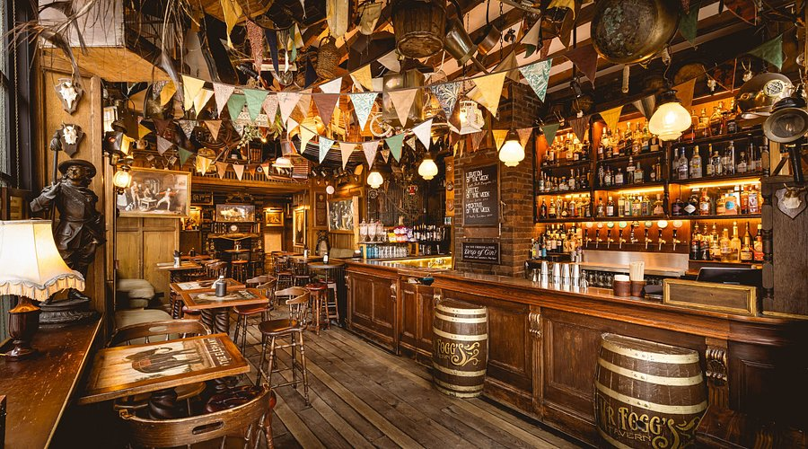

¿Quiénes somos?
Somos un bar clásico español donde la tradición y el buen sabor se encuentran en cada plato. Nos encanta preparar menús del día caseros y raciones para compartir, siempre con ingredientes frescos y de calidad.
Nuestro objetivo es que cada visita sea una experiencia cálida y familiar, donde te sientas como en casa mientras disfrutas de los auténticos sabores de la gastronomía española. Aquí no solo servimos comida, servimos momentos para disfrutar y compartir con amigos y familia.
